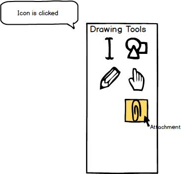
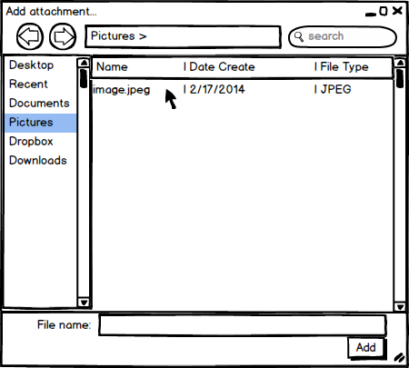
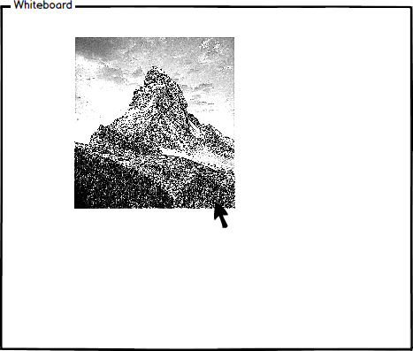

To use the attachment tool, the user moves the cursor over to the 'Drawing Tools' window and clicks on the
attachment tool icon. As shown in Figure 1, once the attachment tool is clicked, the system responds by
highlighting the tool and displaying the name of the tool in small text under the cursor.

Figure 1: Attachment tool icon.
|  |  |
Figure 2: Selecting an object to upload. |
Figure 3: Object is uploaded to whiteboard. |